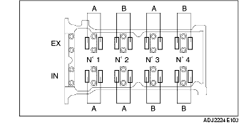

INSPECTION DE JEU DE SOUPAPE [ZJ, Z6]
B3E011012111W01
1. Déposer le couvercle de la batterie.
2. Débrancher le câble négatif de la batterie.
3. Déposer le cache inférieur et la bavette (droite).
4. Déposer le composant de filtre à air. (Spécifications pour l'Europe (conduite à gauche)) (voir la section DEPOSE/REPOSE DE SYSTEME D'ADMISSION D'AIR [ZJ, Z6].)
5. Déposer le boîtier du filtre à air et placer le couvercle de filtre à air à un endroit où il ne gêne pas tandis que le PCM est toujours connecté. (Spécifications pour le Royaume-Uni) (voir la section DEPOSE/REPOSE DE SYSTEME D'ADMISSION D'AIR [ZJ, Z6].)
6. Déposer les bobines d'allumage. (voir la section DEPOSE/REPOSE DE BOBINE D'ALLUMAGE [ZJ, Z6].)
7. Débrancher le flexible de ventilation.
8. Déposer le couvercle de culasse.
9. Mesurer le jeu des soupapes.
-
(1) Faire tourner le vilebrequin dans le sens des aiguilles d'une montre de manière à ce que le cylindre N° 1 soit au point mort haut (PMH) de sa course de compression.
-
(2) Mesurer le jeu des soupapes au point A, comme indiqué dans l'illustration.

-
• Si la valeur mesurée se situe en dehors de la plage de valeurs spécifiées, remplacer le poussoir et régler le jeu de soupape à la valeur moyenne. (voir la section AJUSTEMENT DE JEU DE SOUPAPE [ZJ, Z6].)
-
Jeu de soupape standard [moteur froid]
-
0,27-0,33 mm {0,0107-0,0129 in}
-
Remarque
-
• Veillez à noter les valeurs mesurées pour pouvoir choisir les poussoirs de remplacement appropriés.
-
(3) Faire tourner le vilebrequin de 360° dans le sens des aiguilles d'une montre, de manière à ce que le cylindre N° 4 soit au point mort haut (PMH) de sa course de compression.
-
(4) Mesurer le jeu des soupapes au point B, comme indiqué dans l'illustration.
-
• Si la valeur mesurée se situe en dehors de la plage de valeurs spécifiées, remplacer le poussoir et régler le jeu de soupape à la valeur moyenne. (voir la section AJUSTEMENT DE JEU DE SOUPAPE [ZJ, Z6].)
-
Jeu de soupape standard [moteur froid]
-
0,27-0,33 mm {0,0107-0,0129 in}
-
Remarque
-
• Veillez à noter les valeurs mesurées pour pouvoir choisir les poussoirs de remplacement appropriés.
10. Reposer le couvercle de culasse. (voir la section Note sur la repose de couvercle de culasse.)
11. Brancher le flexible de ventilation.
12. Reposer les bobines d'allumage. (voir la section DEPOSE/REPOSE DE BOBINE D'ALLUMAGE [ZJ, Z6].)
13. Reposer le composant de filtre à air. (voir la section DEPOSE/REPOSE DE SYSTEME D'ADMISSION D'AIR [ZJ, Z6].)
14. Reposer le cache inférieur et la bavette (droite).